ALIASES:
- Fix
- Oke
- Yoke

NOTABLE INFO:
- His tags often appear in places that seem physically impossible to reach.
- Writes late at night and always alone, rarely seen with other writers.
- Pretends like he doesn't enjoy huffing the paint fumes. He picked this up from Kit, who's notorious for it.

OVERPASS, MILE END
2025
11:54p
01-04-2025
ALIASES:
- Bone
- Pink
- Veins

NOTABLE INFO:
- Rumored to be part of a two-person team with Second, working in tandem.
- Once left a full-body outline of himself in pink spray paint near Mont-Royal station.
- Known to return to old spots to document how they fade over time.
- Often writes his tag inside city buses, see below.
BUS, 80 PARC
2024
9:32p
28-03-2025
ALIASES:
- 2ND
- Deux
- Echo

NOTABLE INFO:
- Works closely with Flesh—sometimes their tags appear as a combined piece.
- Notoriously fast. Known for tagging on moving metro trains.
- Regrets covering that little kid's "piece" here, he probably just learned his ABCs.

ALLEYWAY, VERDUN
2025
12:21p
19-02-2025
ALIASES:
- Squeak
- Nest
- Chase

NOTABLE INFO:
- A well-known rooftop writer—most of their work is above eye level.
- Pieces are consistently large-scale.
- Rats seems to be coming for his rodent-themed name, but Mices isn't phased. He's dealt with plenty of biters in his day.

PARKING LOT, PLATEAU
2022
5:51a
09-01-2025
ALIASES:
- :(
- :D
- :$
NOTABLE INFO:


GARBAGE CANS, ROSEMONT
2025
1:07p
01-01-2025
ALIASES:
- Rat King
- Vermin
- Plagg

NOTABLE INFO:
- New on the scene, but he is wildly prolific.
- He's well avoided, with Niky putting word out that Rats is on a long-running manic episode aimed at putting his name everywhere.
- To fill up space, he'll writes his name hudrends of times instead of painting it at a large scale.
- He writes on dumspters a lot...some say he eats out of them too. See below.

PIZZERIA MAGPIE, MILE END
2025
3:00a
05-04-2025
ALIASES:
- NKE
- Tape
- Worst

NOTABLE INFO:
- Edit has been known to stake out spots to catch those who’d cover his pieces.
- affiliated with LOS crew
- This tag was crossed out by Hex in Verdun last month, see the wall below.
BAGEL VAN, MILE END
2024
PARK AV., PARK EX
2025
11:54p
28-05-2024
ALIASES:
- T.C.
- Coin
- YNOT
NOTABLE INFO:
- Some claim the letters are an acronym, but no one knows for what.
- A nomadic writer, originally from Lisbon. She seems to have left her mark and moved on elsewhere.
- Had an ongoing beef with Fioke which resulted in violence.

CANAL, BERLIN
2023

BOROS FOUNDATION, BERLIN
2023
5:44p
13-11-2024
ALIASES:
- No known aliases
NOTABLE INFO:
- No one can decipher this.
- Some see this as more so an occult sigil than a piece of graffiti writing.
- This tag made headlines for its appearances on numerous crypts in Mount Royal Cemetery in
Outremont.

CRYPT, MONT ROYAL CEMETARY
2024

CHURCH, MILE END
2024
11:54p
28-05-2024
ALIASES:
- EMM
- Mega
- Mantra

NOTABLE INFO:
- One of the youngest writer's to establish such a significant presence.
- Dating Niky, they met at a rave in the tunnel under U de M.
-

ABOVE BEAUTY'S, PLATEAU
2025
3:41p
11-12-2024
ALIASES:
- 9 Lives
- Claw
- KitKat
NOTABLE INFO:
- Has been putting up work since the early 90s.
- Goes over every iOpiece he can find.
- Rumored to be a courier who tagged mailboxes on their route.
- Fell from Farine Five Roses, the towering factory along the Lachine canal, putting up his last piece (see below) this past November. The fall was fatal.

Farine Five Roses
2024
1:31a
22-11-2024